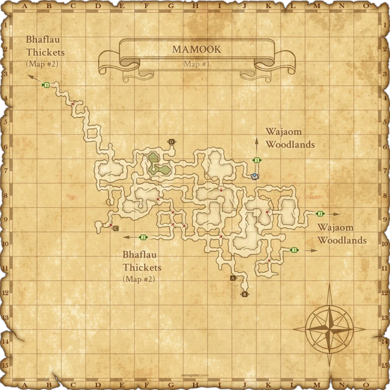
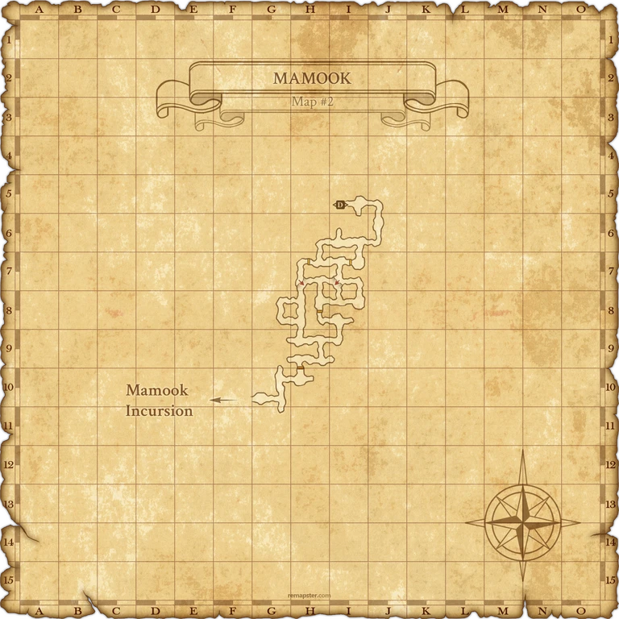
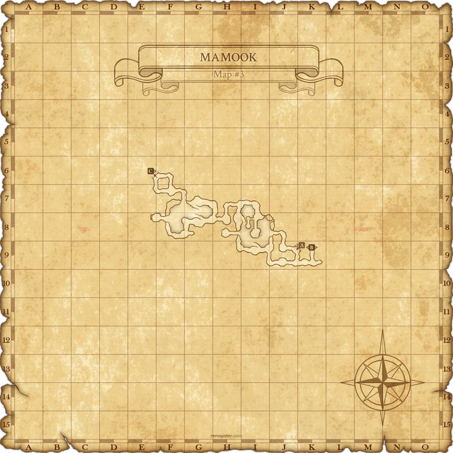
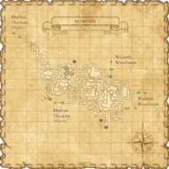
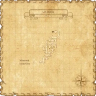
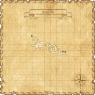

Description
Mamook is a dungeon in Mamool Ja Savagelands.
Map

Involved in Quests / Missions
| Quest / Mission | Type | Starter | Location |
|---|---|---|---|
| An Imperial Heist | Mythic | Naja Salaheem | Aht Urhgan Whitegate (I-10) |
| Get the Picture | General | Balakaf | Aht Urhgan Whitegate |
| Give Peace a Chance | General | Mishhar | Aht Urhgan Whitegate (H-8) |
| Moment of Truth | General | Mishhar | Aht Urhgan Whitegate (H-8) |
| The Prince and the Hopper | General | Maudaal | Aht Urhgan Whitegate (E-9) |
| Two Horn the Savage | General | Milazahn | Aht Urhgan Whitegate (G-8) |
| VW Op. 050: Aht Urhgan Assault | Voidwatch | Camille | Wajaom Woodlands (M-7) |
Notorious Monsters


Regular Monsters


Event Monsters
| Name | Level | Drops | Steal | Family | Spawns | Notes |
|---|---|---|---|---|---|---|
| Carpophagous Puk | question | — | — | PuksImage source | 1 | Spawned Quest: The Art of War; A, S, H |
| Mamool Ja Conservator | 81-83 | — | — | Mamool JaImage source | 8 | Archaic Mirror Guardians; A, L, T(S) |
| Mamool Ja Treasurer | 81-83 | — | — | Mamool JaImage source | 8 | Archaic Mirror Guardians; A, L, T(S) |
| Mamool Ja (NM) | question | — | — | Mamool JaImage source | 1 | Spawned Quest: Two Horn the Savage; A, L, S |
Maps


Story walkthroughs in this area
| Story | Mission / quest |
|---|---|
| ToAU 29 | Puppet in Peril |
References
External references describe their own server or retail rules. Documented Zenith changes take precedence.
Map credits: Map 1 — HorizonXI Wiki · Map 2 — HorizonXI Wiki · Map 3 — HorizonXI Wiki. Original game maps © SQUARE ENIX; redrawn maps retain the credited authorship and license.


Additional level-75 reference






|
The capital of Mamool Ja, Mamook was built deep in a forest on a peninsula west of the Aht Urhgan Empire. In order to control parasite infestations, the wooden structures that cover the capital are burned down and rebuilt every few years. Therefore, much of the construction in Mamook appears rather crude. Like the Mamool Ja's equipment, the few intricate decorative metals in the area were created by prisoners taken by Mamook. Furthermore, sacred stones situated in each area of the capital are believed to harbor the spirits of fallen Mamool Ja heroes and protect Mamook from evil. Connecting Areas
|
Involved in Quests/Missions
| Quest | Type | Starter | Location |
|---|---|---|---|
| Get the Picture | General | Balakaf | Aht Urhgan Whitegate |
| Give Peace a Chance | General | Mishhar | Aht Urhgan Whitegate (H-8) |
| Two Horn the Savage | General | Milazahn | Aht Urhgan Whitegate (G-8) |
| The Prince and the Hopper | General | Maudaal | Aht Urhgan Whitegate (E-9) |
Fishing
|
Logging
| ||||||||||||||||||||||||||||||||||||||||||||||


Notorious Monsters Found Here
|
Name |
Level |
Drops |
Steal |
Family |
Spawns |
Notes | |||||||
| Carpophagous Puk | Unknown | Puks | 1 | ||||||||||
| Darting Kachaal Ja | 83 | Mamool Ja BLM | 1 | ||||||||||
| Devout Radol Ja | 83 - 82 | Mamool Ja WHM | 1 | A, L, S | |||||||||
Dragonscaled Bugaal Ja
|
Mamool Ja BST | 1 | |||||||||||
| Gulool Ja Ja | Mamool Ja NIN | 1 | |||||||||||
| Hundredfaced Hapool Ja | 83 | Mamool Ja NIN | 1 | T(S) | |||||||||
| Mamool Ja (NM) | Mamool Ja | 1 | |||||||||||
| Mamool Ja Conservator | 81-83 | Mamool Ja | 8 Archaic Mirror Guardians |
A, L, T(S) | |||||||||
| Mamool Ja Treasurer | 81-83 | Mamool Ja | 8 Archaic Mirror Guardians |
A, L, T(S) | |||||||||
| Zizzy Zillah | Unknown | Cockatrice | 1 | ||||||||||
|
HP = Detects Low HP; M = Detects Magic; Sc = Follows by Scent; T(S) = True-sight; T(H) = True-hearing JA = Detects job abilities; WS = Detects weaponskills; Z(D) = Asleep in Daytime; Z(N) = Asleep at Nighttime | |||||||||||||
Mobs Found Here
| Name | Level | Drops | Steal | Family | Spawns | Notes | |||||||
|---|---|---|---|---|---|---|---|---|---|---|---|---|---|
| Air Elemental | 75 - 75 | Elemental | A, M | ||||||||||
| Battle Bugard | 78 - 78 | Bugard | A,H | ||||||||||
| Brei | 77-78 | Slime | 3 | A,H,Sc | |||||||||
| Carriage Lizard | 70 - 72 | Lizard | |||||||||||
| Colibri | 70 - 71 | Colibri | |||||||||||
| Hunting Raptor | 73 - 74 | Raptor | A,H | ||||||||||
| Mamook Crab | Unknown | Crab | Fished Up | ||||||||||
| Mamook Mush | Unknown | Slime | Fished Up | ||||||||||
| Mamool Ja Bloodsucker | Unknown | Leech | Fished Up | ||||||||||
| Mamool Ja Blusterer | 81 - 83 | Mamool Ja WHM | A, T(S) | ||||||||||
| Mamool Ja Bounder | 73 - 75 | Mamool Ja THF | A, S | ||||||||||
| Mamool Ja Diver | Sahagin MNK | 3 | A, H | ||||||||||
| Mamool Ja Frogman | 76 - 76 | Sahagin BRD | 3 | A, H | |||||||||
| Mamool Ja Infiltrator | 81 - 83 | Mamool Ja NIN | A, T(S) | ||||||||||
| Mamool Ja Lurker | 81 - 83 | Mamool Ja THF | A, T(S) | ||||||||||
| Mamool Ja Mimer | 81 - 83 | Mamool Ja BLU | A, T(S) | ||||||||||
| Mamool Ja Mimicker | 73 - 75 | Mamool Ja BLU | A, S | ||||||||||
| Mamool Ja Philosopher | 81 - 83 | Mamool Ja BLM | A, T(S) | ||||||||||
| Mamool Ja Pikeman | 81 - 83 | Mamool Ja DRG | A, T(S) | ||||||||||
| Mamool Ja's Wyvern | 76 - 78 | L | |||||||||||
| Mamool Ja Savant | 73 - 75 | Mamool Ja WHM | A,S | ||||||||||
| Mamool Ja Sophist | 73 - 75 | Mamool Ja BLM | A, S | ||||||||||
| Mamool Ja Spearman | 73 - 75 | Mamool Ja DRG | A, S | ||||||||||
| Mamool Ja's Wyvern | 67 - 69? | L | |||||||||||
| Mamool Ja Stabler | 81 - 83 | Mamool Ja BST | A, T(S) | ||||||||||
| Mamool Ja's Raptor | 76 - 78? | Raptor | L | ||||||||||
| Mamool Ja Strapper | 73 - 75 | Mamool Ja BST | A, S | ||||||||||
| Mamool Ja's Lizard | 68 - ? | Lizard | L | ||||||||||
| Mamool Ja Zenist | 73 - 75 | Mamool Ja NIN | A, S | ||||||||||
| Nipper | 76 - 77 | Crab | |||||||||||
| Poroggo | 76 - 77 | Poroggo | 8 | A, T(H) | |||||||||
| Puk | 70 - 72 | Puk | A, H, S | ||||||||||
| Qiqirn Goldsmith | 77 - 77 | Qiqirn | 1 | ||||||||||
| Qiqirn Poulterer | 77 - 77 | Qiqirn | 1 | ||||||||||
| Sea Puk | 76 - 78 | Puk | A, S, H | ||||||||||
| Spinner | 79 - 81 | Spider | L, H | ||||||||||
| Suhur Mas | 70 - 71 | Pugil | A, H | ||||||||||
| Watch Wyvern | 82+? | Wyvern | |||||||||||
| Ziz | 76 - 77 | Cockatrice | A, S | ||||||||||
|
HP = Detects Low HP; M = Detects Magic; Sc = Follows by Scent; T(S) = True-sight; T(H) = True-hearing JA = Detects job abilities; WS = Detects weaponskills; Z(D) = Asleep in Daytime; Z(N) = Asleep at Nighttime | |||||||||||||
Adapted from Eden Wiki: Mamook · Contributors and history · CC BY-SA 4.0. Revision 45079. Layout, links and optional background text adapted for Zenith.